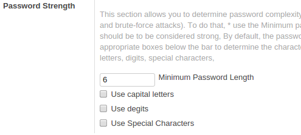

<section class="oe_container">
    <div class="oe_row oe_spaced">
        <h2 class="oe_slogan">User Password Settings</h2>
        <h3 class="oe_slogan">Force user to set password more complex</h3>
                <div class="oe_span6">
            <div class="oe_demo oe_picture oe_screenshot">
                
                <div class="oe_demo_footer oe_centeralign">Developed By Denero Team.</div>
            </div>
        </div>
    <div class="oe_span6">
        <p>
                This section allows you to determine password complexity (the effectiveness of a password in resisting guessing and brute-force attacks). To do that,</p>
                <p>
                * use the Minimum password length to determine how long the password should be to be considered strong, By default, the password should be at least 6 characters long.</p>
                <p>
                * check the appropriate boxes below the bar to determine the character set that must be used in the password: capital letters, digits, special characters.
            </p>
    </div>
    </div>
</section>
